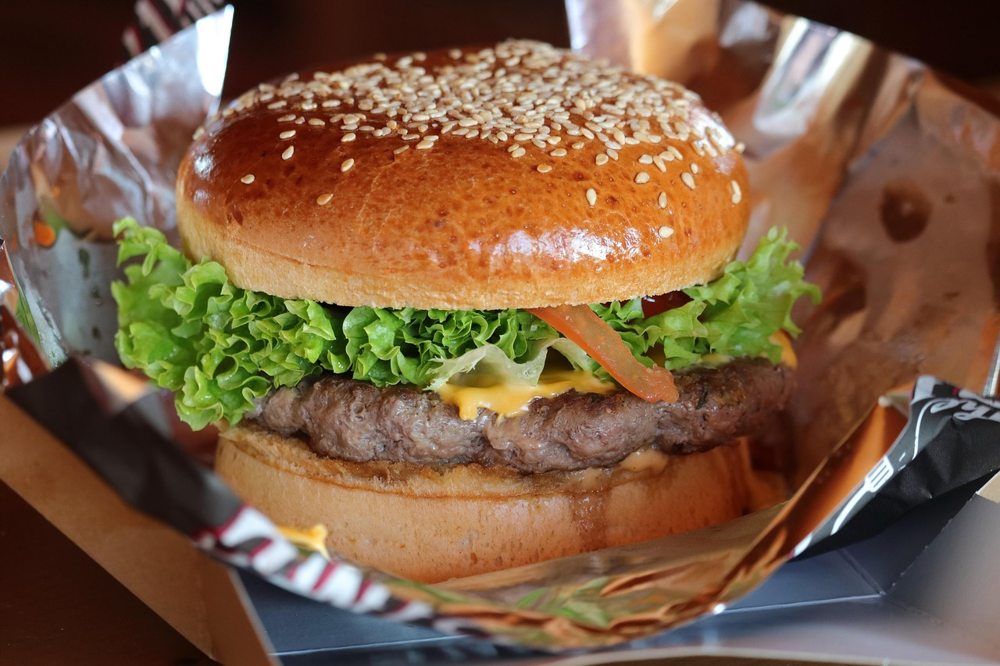

Burger Recipe
Back to Home

How to Make Burger
Making a homemade burger is simple and delicious. Start by toasting your buns, then cook a seasoned beef patty until juicy. Add a slice of cheese to melt on top, and prepare fresh toppings like lettuce, tomato, onion, and pickles. Assemble your burger with your favorite sauces, layer everything together, and enjoy a fresh, flavorful burger made right in your kitchen!
Burger Ingredients
- Burger buns
- Beef patty
- Lettuce leaves
- Tomato slices
- Onion slices
- Cheese slice
- Pickles
- Ketchup
- Mayonnaise
- Mustard
- Salt and pepper
How to Make Burger Step-By-Step
- Slice the burger buns and lightly toast them on a pan or grill.
- Season the beef patty with salt and pepper, then cook it on a hot pan or grill until desired doneness.
- Place a slice of cheese on the patty during the last minute of cooking to melt.
- Spread ketchup, mayonnaise, and mustard on the buns as desired.
- Layer lettuce, tomato slices, onion slices, and pickles on the bottom bun.
- Place the cooked beef patty with melted cheese on top of the vegetables.
- Cover with the top bun and gently press down.
- Serve immediately and enjoy your homemade burger!